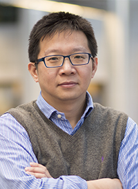

|
|

|
Charlie C.L. Wang, Fellow of ASME
Professor and Chair of Smart Manufacturing
Department of Mechanical, Aerospace and Civil Engineering
Faculty of Science and Engineering
The University of Manchester
Address: Room C8, Pariser Building, 76 Sackville Street, Manchester M1 3NJ, UK
Email: changling.wang@manchester.ac.uk
|
Charlie C. L. Wang is a Professor and Chair of Smart Manufacturing at the University of Manchester (UoM). Before joining UoM in 2020, he worked as a Professor and Chair of Advanced Manufacturing at Delft University of Technology after 2016 and as a Professor / Associate Professor / Assistant Professor of Mechanical and Automation Engineering at the Chinese University of Hong Kong after 2003. He also worked as a visiting professor at University of Southern California during sabbatical leave in 2011. He received his B.Eng. degree (1998) in mechatronics engineering from Huazhong University of Science and Technology and his Ph.D. degree (2002) in mechanical engineering from Hong Kong University of Science and Technology (HKUST). Prof. Wang was the recipient of several awards, including the ASME CIE Excellence in Research Award (2016), the ASME CIE Young Engineer Award (2009), seven Best Paper Awards, five project-oriented technology innovation awards and three teaching awards. He was elected as a Fellow of American Society of Mechanical Engineers (ASME) in 2013, and is currently chairing the executive committee of Solid Modeling Association (SMA).
News:
Our project "Multi-axis robot-based bioprinting system supporting natural cell function preservation and cardiac tissue fabrication" won the MedTech Award in 3D Pioneers Challenge, May 2022
Our paper "A multi-axis robot-based bioprinting platform for bioactive artificial blood vessel and cardiac tissue fabrication" was accepted by Bioactive Materials, April 2022
Our project "SORO-MADE: Soft robotic mannequin with programmable shape deformation" was funded by UK Engineering and Physical Sciences Research Council (EPSRC), March 2022
Our paper "HRBF-Fusion: Accurate 3D reconstruction from RGB-D data using on-the-fly implicits" was accepted by ACM Transactions on Graphics and will be presented in SIGGRAPH 2022, 8-11 August, Vancouver, Canada
The paper of Tianyu Zhang (PhD student in our lab), "Singularity-aware motion planning for multi-axis additive manufacturing", was selected to the Finalist of Best Student Paper Award in IEEE CASE 2021, 23-27 August, Lyon, France
Dr. Tsz-Ho Kwok, who graduated from our group in 2013, was given the ASME CIE Young Engineer Award, July 2021
A new project "Toolpath algorithms for 5XCAM hybrid manufacturing" sponsored by 5AXISWORKS Ltd was signed, July 2021
Our paper "Knitting 4D garment with elasticity controlled for body motion" was accepted by SIGGRAPH, April 2021
Charlie was elected to be the Executive Committee Chair of Solid Modeling Association, January 2021
Our paper "Reinforced FDM: Multi-axis filament alignment with controlled anisotropic strength" was accepted by SIGGRAPH Asia, September 2020
The whole research team moved to Manchester to establish a new Digital Manufacturing Lab, August 2020
|

Last Updated: 06/2022
|
|